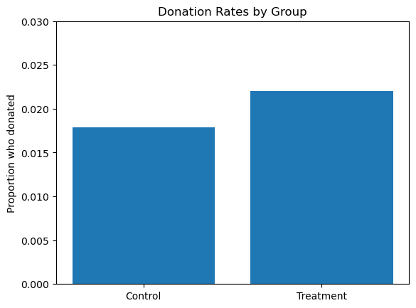
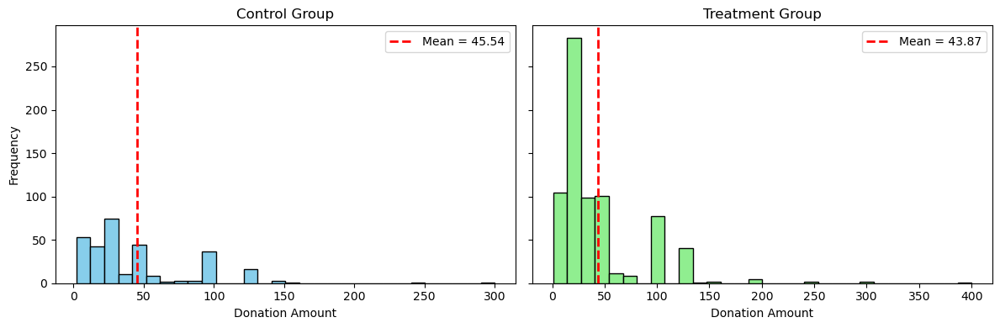
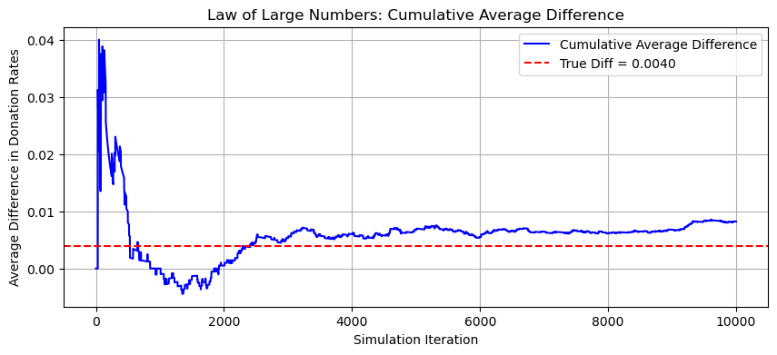
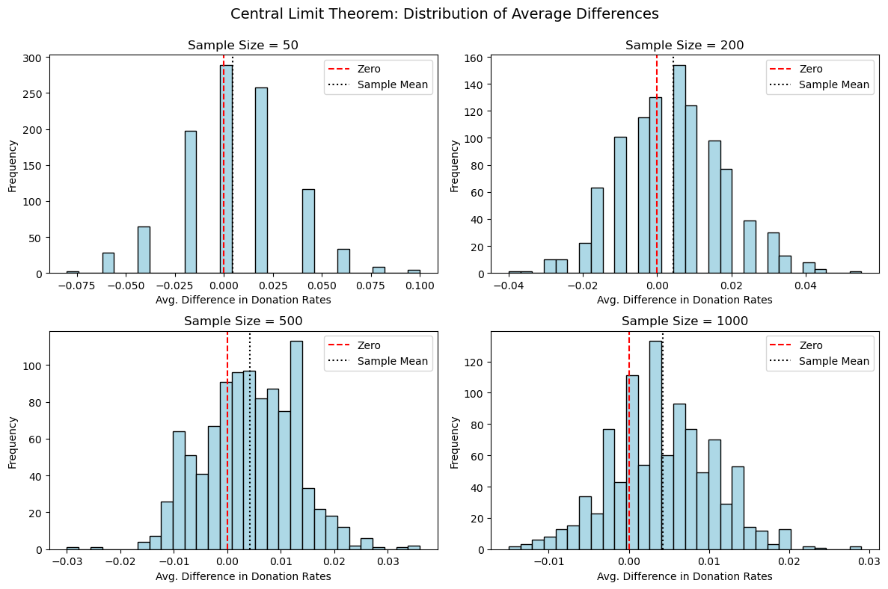

import pandas as pdBalance Test
df = pd.read_stata('karlan_list_2007.dta')
df| treatment | control | ratio | ratio2 | ratio3 | size | size25 | size50 | size100 | sizeno | ... | redcty | bluecty | pwhite | pblack | page18_39 | ave_hh_sz | median_hhincome | powner | psch_atlstba | pop_propurban | |
|---|---|---|---|---|---|---|---|---|---|---|---|---|---|---|---|---|---|---|---|---|---|
| 0 | 0 | 1 | Control | 0 | 0 | Control | 0 | 0 | 0 | 0 | ... | 0.0 | 1.0 | 0.446493 | 0.527769 | 0.317591 | 2.10 | 28517.0 | 0.499807 | 0.324528 | 1.000000 |
| 1 | 0 | 1 | Control | 0 | 0 | Control | 0 | 0 | 0 | 0 | ... | 1.0 | 0.0 | NaN | NaN | NaN | NaN | NaN | NaN | NaN | NaN |
| 2 | 1 | 0 | 1 | 0 | 0 | $100,000 | 0 | 0 | 1 | 0 | ... | 0.0 | 1.0 | 0.935706 | 0.011948 | 0.276128 | 2.48 | 51175.0 | 0.721941 | 0.192668 | 1.000000 |
| 3 | 1 | 0 | 1 | 0 | 0 | Unstated | 0 | 0 | 0 | 1 | ... | 1.0 | 0.0 | 0.888331 | 0.010760 | 0.279412 | 2.65 | 79269.0 | 0.920431 | 0.412142 | 1.000000 |
| 4 | 1 | 0 | 1 | 0 | 0 | $50,000 | 0 | 1 | 0 | 0 | ... | 0.0 | 1.0 | 0.759014 | 0.127421 | 0.442389 | 1.85 | 40908.0 | 0.416072 | 0.439965 | 1.000000 |
| ... | ... | ... | ... | ... | ... | ... | ... | ... | ... | ... | ... | ... | ... | ... | ... | ... | ... | ... | ... | ... | ... |
| 50078 | 1 | 0 | 1 | 0 | 0 | $25,000 | 1 | 0 | 0 | 0 | ... | 0.0 | 1.0 | 0.872797 | 0.089959 | 0.257265 | 2.13 | 45047.0 | 0.771316 | 0.263744 | 1.000000 |
| 50079 | 0 | 1 | Control | 0 | 0 | Control | 0 | 0 | 0 | 0 | ... | 0.0 | 1.0 | 0.688262 | 0.108889 | 0.288792 | 2.67 | 74655.0 | 0.741931 | 0.586466 | 1.000000 |
| 50080 | 0 | 1 | Control | 0 | 0 | Control | 0 | 0 | 0 | 0 | ... | 1.0 | 0.0 | 0.900000 | 0.021311 | 0.178689 | 2.36 | 26667.0 | 0.778689 | 0.107930 | 0.000000 |
| 50081 | 1 | 0 | 3 | 0 | 1 | Unstated | 0 | 0 | 0 | 1 | ... | 1.0 | 0.0 | 0.917206 | 0.008257 | 0.225619 | 2.57 | 39530.0 | 0.733988 | 0.184768 | 0.634903 |
| 50082 | 1 | 0 | 3 | 0 | 1 | $25,000 | 1 | 0 | 0 | 0 | ... | 0.0 | 1.0 | 0.530023 | 0.074112 | 0.340698 | 3.70 | 48744.0 | 0.717843 | 0.127941 | 0.994181 |
50083 rows × 51 columns
import pandas as pd
import statsmodels.formula.api as smf
from scipy.stats import t as t_dist
# Variables to test
variables = ['mrm2', 'freq', 'hpa', 'female']
# Collect results
results = []
for var in variables:
# Split by treatment group
treated = df[df["treatment"] == 1][var].dropna()
control = df[df["treatment"] == 0][var].dropna()
# Compute sample stats
x_t, x_c = treated.mean(), control.mean()
s2_t, s2_c = treated.var(), control.var()
n_t, n_c = treated.shape[0], control.shape[0]
# Manual t-test
t_stat = (x_t - x_c) / ((s2_t / n_t + s2_c / n_c) ** 0.5)
df_num = (s2_t / n_t + s2_c / n_c) ** 2
df_denom = ((s2_t / n_t) ** 2) / (n_t - 1) + ((s2_c / n_c) ** 2) / (n_c - 1)
dof = df_num / df_denom
p_val_ttest = 2 * t_dist.sf(abs(t_stat), dof)
# Linear regression
formula = f"{var} ~ treatment"
model = smf.ols(formula, data=df).fit()
coef = model.params['treatment']
p_val_reg = model.pvalues['treatment']
# Store results
results.append({
'Variable': var,
'Mean (Treatment)': round(x_t, 3),
'Mean (Control)': round(x_c, 3),
't-stat (manual)': round(t_stat, 3),
'p-value (manual)': round(p_val_ttest, 3),
'Coef (regression)': round(coef, 3),
'p-value (regression)': round(p_val_reg, 3)
})
# Display summary table
results_df = pd.DataFrame(results)
print(results_df) Variable Mean (Treatment) Mean (Control) t-stat (manual) \
0 mrm2 13.012 12.998000 0.120
1 freq 8.035 8.047000 -0.111
2 hpa 59.597 58.959999 0.970
3 female 0.275 0.283000 -1.754
p-value (manual) Coef (regression) p-value (regression)
0 0.905 0.014 0.905
1 0.912 -0.012 0.912
2 0.332 0.637 0.345
3 0.080 -0.008 0.079 Experimental Results
Charitable Contributions Made
# Create a bar plot of donation rates
donation_rates = df.groupby("treatment")["gave"].mean()
donation_rates.index = ["Control", "Treatment"]
print(donation_rates)Control 0.017858
Treatment 0.022039
Name: gave, dtype: float64import matplotlib.pyplot as plt
plt.bar(donation_rates.index, donation_rates.values)
plt.ylabel("Proportion who donated")
plt.title("Donation Rates by Group")
plt.ylim(0, 0.03)
plt.show()
# Manual t-test using class formula
treated = df[df["treatment"] == 1]["gave"].dropna()
control = df[df["treatment"] == 0]["gave"].dropna()
x_t, x_c = treated.mean(), control.mean()
s2_t, s2_c = treated.var(), control.var()
n_t, n_c = len(treated), len(control)
t_stat = (x_t - x_c) / ((s2_t/n_t + s2_c/n_c) ** 0.5)
# Welch–Satterthwaite degrees of freedom
df_num = (s2_t/n_t + s2_c/n_c)**2
df_denom = ((s2_t/n_t)**2)/(n_t - 1) + ((s2_c/n_c)**2)/(n_c - 1)
dof = df_num / df_denom
# Two-sided p-value
p_val = 2 * t_dist.sf(abs(t_stat), dof)
print(f"Manual t-stat: {t_stat:.3f}")
print(f"Manual p-value: {p_val:.4f}")Manual t-stat: 3.209
Manual p-value: 0.0013# Linear regression
model_lin = smf.ols("gave ~ treatment", data=df).fit()
print(model_lin.summary()) OLS Regression Results
==============================================================================
Dep. Variable: gave R-squared: 0.000
Model: OLS Adj. R-squared: 0.000
Method: Least Squares F-statistic: 9.618
Date: Tue, 22 Apr 2025 Prob (F-statistic): 0.00193
Time: 14:37:14 Log-Likelihood: 26630.
No. Observations: 50083 AIC: -5.326e+04
Df Residuals: 50081 BIC: -5.324e+04
Df Model: 1
Covariance Type: nonrobust
==============================================================================
coef std err t P>|t| [0.025 0.975]
------------------------------------------------------------------------------
Intercept 0.0179 0.001 16.225 0.000 0.016 0.020
treatment 0.0042 0.001 3.101 0.002 0.002 0.007
==============================================================================
Omnibus: 59814.280 Durbin-Watson: 2.005
Prob(Omnibus): 0.000 Jarque-Bera (JB): 4317152.727
Skew: 6.740 Prob(JB): 0.00
Kurtosis: 46.440 Cond. No. 3.23
==============================================================================
Notes:
[1] Standard Errors assume that the covariance matrix of the errors is correctly specified.# Probit regression
model_probit = smf.probit("gave ~ treatment", data=df).fit()
print(model_probit.summary())Optimization terminated successfully.
Current function value: 0.100443
Iterations 7
Probit Regression Results
==============================================================================
Dep. Variable: gave No. Observations: 50083
Model: Probit Df Residuals: 50081
Method: MLE Df Model: 1
Date: Tue, 22 Apr 2025 Pseudo R-squ.: 0.0009783
Time: 14:36:45 Log-Likelihood: -5030.5
converged: True LL-Null: -5035.4
Covariance Type: nonrobust LLR p-value: 0.001696
==============================================================================
coef std err z P>|z| [0.025 0.975]
------------------------------------------------------------------------------
Intercept -2.1001 0.023 -90.073 0.000 -2.146 -2.054
treatment 0.0868 0.028 3.113 0.002 0.032 0.141
==============================================================================Differences between Match Rates
# Subset to treatment group
treat_group = df[df["treatment"] == 1]
# Example: compare 2:1 vs 1:1
x2 = treat_group[treat_group["ratio2"] == 1]["gave"]
x1 = treat_group[treat_group["ratio"] == 1]["gave"]
x_t, x_c = x2.mean(), x1.mean()
s2_t, s2_c = x2.var(), x1.var()
n_t, n_c = len(x2), len(x1)
t_stat = (x_t - x_c) / ((s2_t/n_t + s2_c/n_c) ** 0.5)
# Welch–Satterthwaite degrees of freedom
df_num = (s2_t/n_t + s2_c/n_c)**2
df_denom = ((s2_t/n_t)**2)/(n_t - 1) + ((s2_c/n_c)**2)/(n_c - 1)
dof = df_num / df_denom
# Two-sided p-value
p_val = 2 * t_dist.sf(abs(t_stat), dof)
print(f"Manual t-stat: {t_stat:.3f}")
print(f"Manual p-value: {p_val:.4f}")Manual t-stat: 0.965
Manual p-value: 0.3345# Example: compare 2:1 vs 3:1
x2 = treat_group[treat_group["ratio2"] == 1]["gave"]
x3 = treat_group[treat_group["ratio"] == 1]["gave"]
x_t, x_c = x2.mean(), x3.mean()
s2_t, s2_c = x2.var(), x3.var()
n_t, n_c = len(x2), len(x3)
t_stat = (x_t - x_c) / ((s2_t/n_t + s2_c/n_c) ** 0.5)
# Welch–Satterthwaite degrees of freedom
df_num = (s2_t/n_t + s2_c/n_c)**2
df_denom = ((s2_t/n_t)**2)/(n_t - 1) + ((s2_c/n_c)**2)/(n_c - 1)
dof = df_num / df_denom
# Two-sided p-value
p_val = 2 * t_dist.sf(abs(t_stat), dof)
print(f"Manual t-stat: {t_stat:.3f}")
print(f"Manual p-value: {p_val:.4f}")Manual t-stat: 0.965
Manual p-value: 0.3345# Example: compare 1:1 vs 3:1
x1 = treat_group[treat_group["ratio2"] == 1]["gave"]
x3 = treat_group[treat_group["ratio"] == 1]["gave"]
x_t, x_c = x1.mean(), x3.mean()
s2_t, s2_c = x1.var(), x3.var()
n_t, n_c = len(x1), len(x3)
t_stat = (x_t - x_c) / ((s2_t/n_t + s2_c/n_c) ** 0.5)
# Welch–Satterthwaite degrees of freedom
df_num = (s2_t/n_t + s2_c/n_c)**2
df_denom = ((s2_t/n_t)**2)/(n_t - 1) + ((s2_c/n_c)**2)/(n_c - 1)
dof = df_num / df_denom
# Two-sided p-value
p_val = 2 * t_dist.sf(abs(t_stat), dof)
print(f"Manual t-stat: {t_stat:.3f}")
print(f"Manual p-value: {p_val:.4f}")Manual t-stat: 0.965
Manual p-value: 0.3345import pandas as pd
import statsmodels.formula.api as smf
# Run regression with 1:1 as baseline (ratio1 is omitted)
model = smf.ols("gave ~ ratio2 + ratio3", data=treat_group).fit()
print(model.summary()) OLS Regression Results
==============================================================================
Dep. Variable: gave R-squared: 0.000
Model: OLS Adj. R-squared: -0.000
Method: Least Squares F-statistic: 0.6454
Date: Tue, 22 Apr 2025 Prob (F-statistic): 0.524
Time: 14:36:45 Log-Likelihood: 16688.
No. Observations: 33396 AIC: -3.337e+04
Df Residuals: 33393 BIC: -3.334e+04
Df Model: 2
Covariance Type: nonrobust
==============================================================================
coef std err t P>|t| [0.025 0.975]
------------------------------------------------------------------------------
Intercept 0.0207 0.001 14.912 0.000 0.018 0.023
ratio2 0.0019 0.002 0.958 0.338 -0.002 0.006
ratio3 0.0020 0.002 1.008 0.313 -0.002 0.006
==============================================================================
Omnibus: 38963.957 Durbin-Watson: 1.995
Prob(Omnibus): 0.000 Jarque-Bera (JB): 2506478.937
Skew: 6.511 Prob(JB): 0.00
Kurtosis: 43.394 Cond. No. 3.73
==============================================================================
Notes:
[1] Standard Errors assume that the covariance matrix of the errors is correctly specified.import pandas as pd
import statsmodels.formula.api as smf
# Raw response rates by match ratio
# Create match ratio group labels
def get_ratio(row):
if row["ratio2"] == 1:
return "2:1"
elif row["ratio3"] == 1:
return "3:1"
else:
return "1:1"
treat_group["ratio_group"] = treat_group.apply(get_ratio, axis=1)
# Calculate mean donation rate by group
donation_rates = treat_group.groupby("ratio_group")["gave"].mean()
print("Raw Donation Rates by Match Ratio:\n", donation_rates)
# --- 2. Differences in fitted coefficients (from previous regression) ---
model = smf.ols("gave ~ ratio2 + ratio3", data=treat_group).fit()
coef_1_1 = model.params['Intercept']
coef_2_1 = coef_1_1 + model.params['ratio2']
coef_3_1 = coef_1_1 + model.params['ratio3']
print("\nFitted Coefficients:")
print(f"1:1 donation rate (Intercept): {coef_1_1:.4f}")
print(f"2:1 estimated rate: {coef_2_1:.4f}")
print(f"3:1 estimated rate: {coef_3_1:.4f}")
# --- 3. Compute response rate differences ---
print("\nDifferences in response rates (from regression):")
print(f"2:1 − 1:1: {model.params['ratio2']:.4f}")
print(f"3:1 − 1:1: {model.params['ratio3']:.4f}")
print(f"3:1 − 2:1: {model.params['ratio3'] - model.params['ratio2']:.4f}")Raw Donation Rates by Match Ratio:
ratio_group
1:1 0.020749
2:1 0.022633
3:1 0.022733
Name: gave, dtype: float64
Fitted Coefficients:
1:1 donation rate (Intercept): 0.0207
2:1 estimated rate: 0.0226
3:1 estimated rate: 0.0227
Differences in response rates (from regression):
2:1 − 1:1: 0.0019
3:1 − 1:1: 0.0020
3:1 − 2:1: 0.0001/tmp/ipykernel_5387/3286036591.py:15: SettingWithCopyWarning:
A value is trying to be set on a copy of a slice from a DataFrame.
Try using .loc[row_indexer,col_indexer] = value instead
See the caveats in the documentation: https://pandas.pydata.org/pandas-docs/stable/user_guide/indexing.html#returning-a-view-versus-a-copy
treat_group["ratio_group"] = treat_group.apply(get_ratio, axis=1)# Raw response rates by match ratio
# Create match ratio group labels
def get_ratio(row):
if row["ratio2"] == 1:
return "2:1"
elif row["ratio3"] == 1:
return "3:1"
else:
return "1:1"
treat_group["ratio_group"] = treat_group.apply(get_ratio, axis=1)/tmp/ipykernel_5387/716834291.py:12: SettingWithCopyWarning:
A value is trying to be set on a copy of a slice from a DataFrame.
Try using .loc[row_indexer,col_indexer] = value instead
See the caveats in the documentation: https://pandas.pydata.org/pandas-docs/stable/user_guide/indexing.html#returning-a-view-versus-a-copy
treat_group["ratio_group"] = treat_group.apply(get_ratio, axis=1)# Create match ratio group labels
def get_ratio(row):
if row["ratio2"] == 1:
return "2:1"
elif row["ratio3"] == 1:
return "3:1"
else:
return "1:1"
# Safely add the new column
treat_group.loc[:, "ratio_group"] = treat_group.apply(get_ratio, axis=1)
# Calculate mean donation rate by group
donation_rates = treat_group.groupby("ratio_group")["gave"].mean()
print("Raw Donation Rates by Match Ratio:\n", donation_rates)
Raw Donation Rates by Match Ratio:
ratio_group
1:1 0.020749
2:1 0.022633
3:1 0.022733
Name: gave, dtype: float64Size of Charitable Contribution
from scipy.stats import ttest_ind
import statsmodels.formula.api as smf
# Compare donation amounts across all individuals
# (most people donated $0)
treated = df[df["treatment"] == 1]["amount"].dropna()
control = df[df["treatment"] == 0]["amount"].dropna()
# T-test
t_stat, p_val = ttest_ind(treated, control, equal_var=False)
print(f"T-test: t = {t_stat:.3f}, p = {p_val:.4f}")
# Linear regression (everyone)
model_all = smf.ols("amount ~ treatment", data=df).fit()
print(model_all.summary())T-test: t = 1.918, p = 0.0551
OLS Regression Results
==============================================================================
Dep. Variable: amount R-squared: 0.000
Model: OLS Adj. R-squared: 0.000
Method: Least Squares F-statistic: 3.461
Date: Tue, 22 Apr 2025 Prob (F-statistic): 0.0628
Time: 14:36:46 Log-Likelihood: -1.7946e+05
No. Observations: 50083 AIC: 3.589e+05
Df Residuals: 50081 BIC: 3.589e+05
Df Model: 1
Covariance Type: nonrobust
==============================================================================
coef std err t P>|t| [0.025 0.975]
------------------------------------------------------------------------------
Intercept 0.8133 0.067 12.063 0.000 0.681 0.945
treatment 0.1536 0.083 1.861 0.063 -0.008 0.315
==============================================================================
Omnibus: 96861.113 Durbin-Watson: 2.008
Prob(Omnibus): 0.000 Jarque-Bera (JB): 240735713.635
Skew: 15.297 Prob(JB): 0.00
Kurtosis: 341.269 Cond. No. 3.23
==============================================================================
Notes:
[1] Standard Errors assume that the covariance matrix of the errors is correctly specified.# Filter only donors (those who gave a positive amount)
donors = df[df["gave"] == 1]
# Compare mean donation amounts between treatment & control among donors
treated_donors = donors[donors["treatment"] == 1]["amount"]
control_donors = donors[donors["treatment"] == 0]["amount"]
t_stat, p_val = ttest_ind(treated_donors, control_donors, equal_var=False)
print(f"T-test (donors only): t = {t_stat:.3f}, p = {p_val:.4f}")
# Run regression: amount ~ treatment
model_donors = smf.ols("amount ~ treatment", data=donors).fit()
# Output summary
print(model_donors.summary())T-test (donors only): t = -0.585, p = 0.5590
OLS Regression Results
==============================================================================
Dep. Variable: amount R-squared: 0.000
Model: OLS Adj. R-squared: -0.001
Method: Least Squares F-statistic: 0.3374
Date: Tue, 22 Apr 2025 Prob (F-statistic): 0.561
Time: 14:36:46 Log-Likelihood: -5326.8
No. Observations: 1034 AIC: 1.066e+04
Df Residuals: 1032 BIC: 1.067e+04
Df Model: 1
Covariance Type: nonrobust
==============================================================================
coef std err t P>|t| [0.025 0.975]
------------------------------------------------------------------------------
Intercept 45.5403 2.423 18.792 0.000 40.785 50.296
treatment -1.6684 2.872 -0.581 0.561 -7.305 3.968
==============================================================================
Omnibus: 587.258 Durbin-Watson: 2.031
Prob(Omnibus): 0.000 Jarque-Bera (JB): 5623.279
Skew: 2.464 Prob(JB): 0.00
Kurtosis: 13.307 Cond. No. 3.49
==============================================================================
Notes:
[1] Standard Errors assume that the covariance matrix of the errors is correctly specified.import matplotlib.pyplot as plt
# Subset only those who donated
donors = df[df["gave"] == 1]
# Split by treatment
treatment_donors = donors[donors["treatment"] == 1]["amount"]
control_donors = donors[donors["treatment"] == 0]["amount"]
# Compute means
mean_treat = treatment_donors.mean()
mean_control = control_donors.mean()
# Plot histograms
fig, axes = plt.subplots(1, 2, figsize=(12, 4), sharey=True)
# Control group plot
axes[0].hist(control_donors, bins=30, color='skyblue', edgecolor='black')
axes[0].axvline(mean_control, color='red', linestyle='dashed', linewidth=2, label=f"Mean = {mean_control:.2f}")
axes[0].set_title("Control Group")
axes[0].set_xlabel("Donation Amount")
axes[0].set_ylabel("Frequency")
axes[0].legend()
# Treatment group plot
axes[1].hist(treatment_donors, bins=30, color='lightgreen', edgecolor='black')
axes[1].axvline(mean_treat, color='red', linestyle='dashed', linewidth=2, label=f"Mean = {mean_treat:.2f}")
axes[1].set_title("Treatment Group")
axes[1].set_xlabel("Donation Amount")
axes[1].legend()
plt.tight_layout()
plt.show()
Simulation Experiment
Law of Large Numbers
import numpy as np
import matplotlib.pyplot as plt
# Set seed for reproducibility
np.random.seed(42)
# Simulation parameters
n = 10000
p_control = 0.018
p_treatment = 0.022
# Simulate donations (1 = gave, 0 = didn't)
control_draws = np.random.binomial(1, p_control, n)
treatment_draws = np.random.binomial(1, p_treatment, n)
# Compute stepwise differences in donation outcomes
diffs = treatment_draws - control_draws
# Cumulative average of differences
cumulative_avg_diff = np.cumsum(diffs) / np.arange(1, n+1)
# Plot
plt.figure(figsize=(10, 4))
plt.plot(cumulative_avg_diff, label='Cumulative Average Difference', color='blue')
plt.axhline(p_treatment - p_control, color='red', linestyle='dashed', label=f"True Diff = {p_treatment - p_control:.004f}")
plt.title("Law of Large Numbers: Cumulative Average Difference")
plt.xlabel("Simulation Iteration")
plt.ylabel("Average Difference in Donation Rates")
plt.legend()
plt.grid(True)
plt.show()
Central Limit Theorem
import numpy as np
import matplotlib.pyplot as plt
# Set seed
np.random.seed(42)
# Parameters
p_control = 0.018
p_treatment = 0.022
sample_sizes = [50, 200, 500, 1000]
num_simulations = 1000
# Create subplots
fig, axes = plt.subplots(2, 2, figsize=(12, 8))
axes = axes.flatten()
for i, n in enumerate(sample_sizes):
avg_diffs = []
for _ in range(num_simulations):
control_sample = np.random.binomial(1, p_control, n)
treatment_sample = np.random.binomial(1, p_treatment, n)
diff = treatment_sample.mean() - control_sample.mean()
avg_diffs.append(diff)
# Plot histogram
axes[i].hist(avg_diffs, bins=30, color='lightblue', edgecolor='black')
axes[i].axvline(x=0, color='red', linestyle='dashed', label='Zero')
axes[i].axvline(x=np.mean(avg_diffs), color='black', linestyle='dotted', label='Sample Mean')
axes[i].set_title(f"Sample Size = {n}")
axes[i].set_xlabel("Avg. Difference in Donation Rates")
axes[i].set_ylabel("Frequency")
axes[i].legend()
plt.suptitle("Central Limit Theorem: Distribution of Average Differences", fontsize=14)
plt.tight_layout()
plt.subplots_adjust(top=0.9)
plt.show()